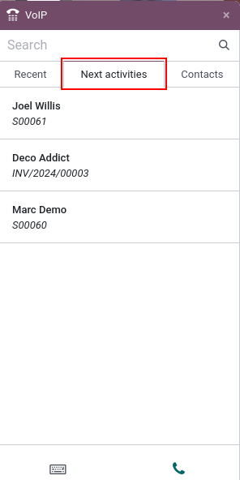

Make, receive, transfer, and forward calls¶
Calling prospective clients, customers, or colleagues is an essential part of any business. A company also needs to be available when customers call, in order to build trust and make connections.
This document covers how to make, receive, transfer, and forward calls with Odoo VoIP.
Make calls¶
Starting on the Odoo dashboard, a call can be made by opening the phone widget in the the upper-right corner, which is represented by a ☎️ (phone) icon.
Then, a user can click on the Contacts tab, and click into any contact in the database to make a call.
Additionally, one can also use the Search bar in the VOIP pop-up window to find any desired contact.
To manually make a call, click the ⌨️ (keyboard) icon, and proceed to manually key in the desired number. Do not forget to lead with the + (plus) icon, followed by the international country code.
Example
For the United States of America, the country code and + (plus) icon, would look like
this: +1. If one were to dial Belgium, the number would be prefixed by +32, and for Great
Britain it would be +44.
After entering the full number, with the required + (plus) icon prefix and country code, click the green üìû (phone) icon to start the call. When finished, click the red üìû (phone) icon to end the call.

Receive calls¶
An incoming call automatically opens the VoIP widget, when a user is using the Odoo database. Should the database be open in another tab, a sound plays (the sound must be activated on the device).
Once back to the tab, the calling screen of the VoIP phone widget appears.
Click the green üìû (phone) icon to pick up the call, or the red üìû (phone) icon to reject the call.

Add to call queue¶
All the contacts and customers that need to be called can be seen in one place with the Odoo VoIP phone widget, under the Next activities tab.
To add a call to the Next activities tab, click the green üìû (phone) icon, while in kanban view of the CRM application.
To remove them from the call queue, hover over the opportunity that has a call scheduled, and click the red üìû (phone) icon that appears with the - (minus) icon.
When navigating back to the VoIP phone widget, only the calls that are scheduled immediately for that day appear in the queue under the Next Activities tab of the VoIP pop-up widget.
The Next Activities tab of the VoIP phone widget is integrated with the following Odoo apps: CRM, Project, and Helpdesk.
A call can be added in the chatter of records within those applications.
To manually add a call, via the chatter, click Activities (next to the üïó (clock) icon). Under Activity Type, select Call from the drop-down menu that appears.
Next, set a Due Date, and add a Summary.
Lastly, change the Assigned to field to the person that should make the call. Whomever is set in this last field (Assigned to) has this call show up in their Next Activities call queue in the Odoo VoIP phone widget.
Important
Only calls for the immediate day (today’s date) appear in the Next Activities tab of the VoIP phone widget for that specific user.
If specified, click Save or Open Calendar to complete the scheduling of the call.
Transfer calls¶
A call can be transferred from one user to another in the Odoo VoIP phone widget. However, this can only occur after speaking to the caller first. Without picking up the call in the Odoo VoIP phone widget, the only way to transfer a call is automatically though the provider console/portal.
See also
For more information on transfers, visit Forwardings tab.
To transfer a call within the Odoo VoIP phone widget, first, answer the call using the green üìû (phone) icon.
Once the incoming call is answered, click the ↔ (left-right arrow) icon. Then, enter the extension of the user the call should be forwarded to. Finally, click Transfer to route the call to that phone number.
Tip
To find the extension for a user, consult the VoIP administrator, or, if the user has Settings access rights to Administration, navigate to .
For more information on access rights, visit: Access rights.

Forward calls¶
To forward a call within the Odoo VoIP phone widget, first, answer the call using the green üìû (phone) icon. Once the incoming call is answered, click the ↔ (left-right arrow) icon.
Then, enter the full phone number of the user the call should be forwarded to. Finally, click Transfer to route the call to that phone number.
See also
For more information on forwarding, visit Forwardings tab.